Contents
MH Sampling from a mixture of two 1d Gaussians
using a 1d Gaussian proposal with different sigma.
% This file is from pmtk3.googlecode.com function mcmcGmmDemo()
mixweight = [0.3, 0.7]; %mu = [-50, 50]; mu = [-20, 20]; K = 2; Sigma = cat(3, 100, 100); % Sigmas(1,1,k) = 100 targetFn = @(X)mixGaussLogprob(mu, Sigma, mixweight, X); %sigmas = [0 10 100 500]; %0 means use Gibbs sampling %sigmas = [0 1 10 500]; %0 means use Gibbs sampling sigmas = [0 1 8 500]; %0 means use Gibbs sampling
Full conditionals
function q = sampleQ(xq) x = xq(1); q = xq(2); post = zeros(1,K); for k=1:K post(k) = mixweight(k) * exp(gaussLogprob(mu(:,k), Sigma(:,:,k), x)); end post = normalize(post); q = sampleDiscrete(post); end function x = sampleX(xq) x = xq(1); q = xq(2); x = gaussSample(mu(:,q), Sigma(:,:,q), 1); end
Run each sampler 3 times and plot convergence diagnostics
seeds = 1:3; nseeds = length(seeds); N = 1000; X = zeros(N, nseeds); for s=1:length(sigmas) sigma_prop = sigmas(s); proposalFn = @(x) (x + (sigma_prop * randn(1,1))); for i=1:length(seeds) setSeed(seeds(i)); xinit = mu(2) + randn(1,1); if sigma_prop == 0 % use Gibbs sampling qinit = sampleDiscrete(mixweight, 1); xqinit = [xinit qinit]; [XQ] = gibbsSample({@sampleX, @sampleQ}, xqinit, N); X(:,i) = XQ(:,1); % store x samples for later % plot gibbs sampling ouptut figure; hold on colors = 'rbg'; for k=1:K ndx = find(XQ(:,2) ==k); plot(ndx, XQ(ndx,1), 'o', 'color', colors(k)); end printPmtkFigure(sprintf('mcmcGmmDemoGibbs%d', i)); else [X(:,i), ar] = metropolisHastings(targetFn, proposalFn, xinit, N); end end fname = sprintf('mcmcGmmDemoSigma%d', sigma_prop); if sigma_prop == 0 ttl = 'gibbs'; else ttl = sprintf('MH N(0,%5.3f^2)', sigma_prop); end plotConvDiagnostics(X, ttl, fname, 40); samples{s} = X(:,1); end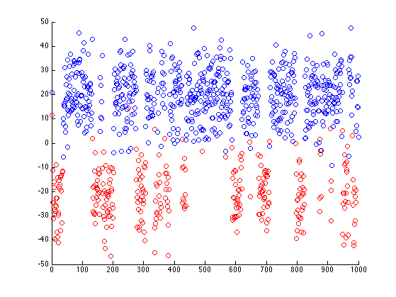 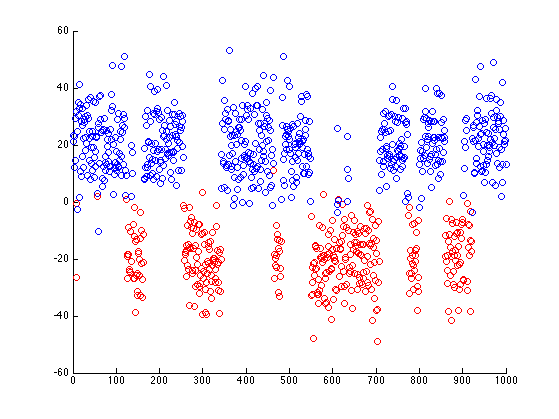 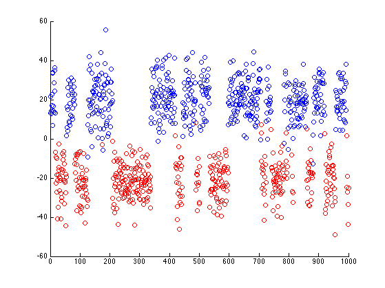 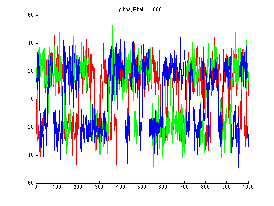 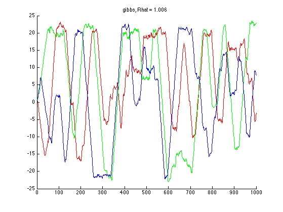 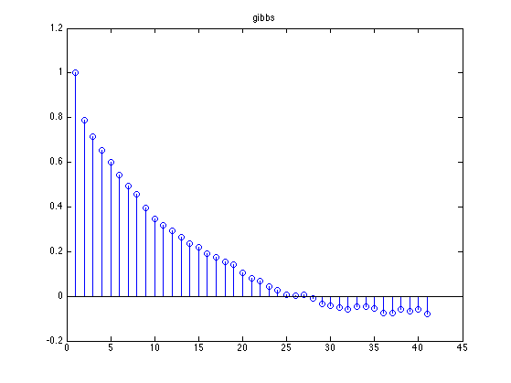 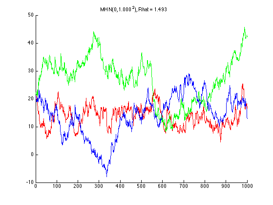 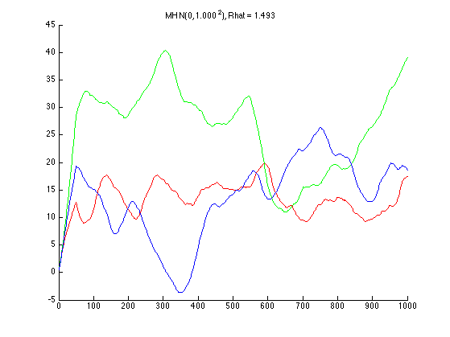 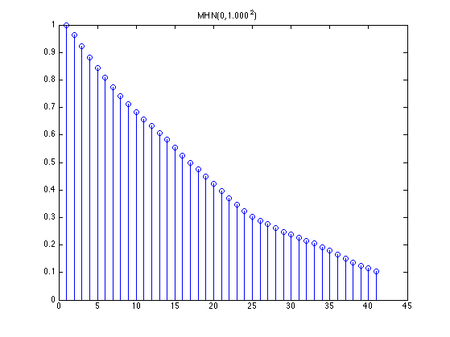 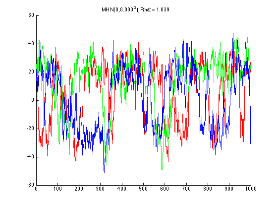 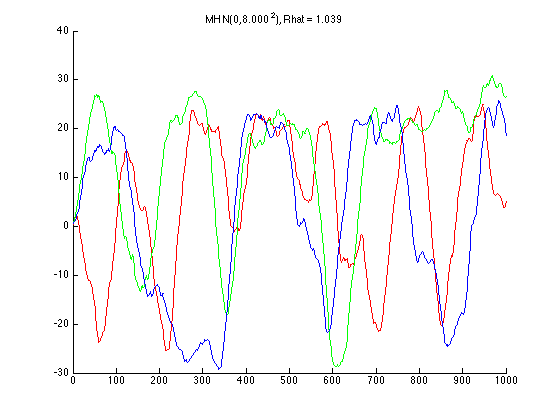 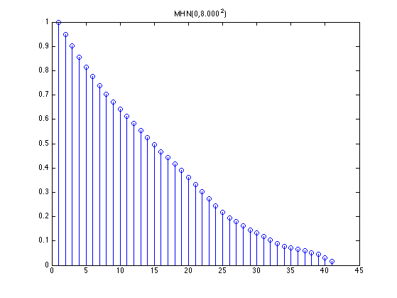 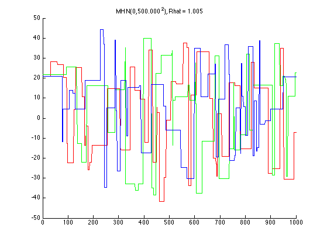 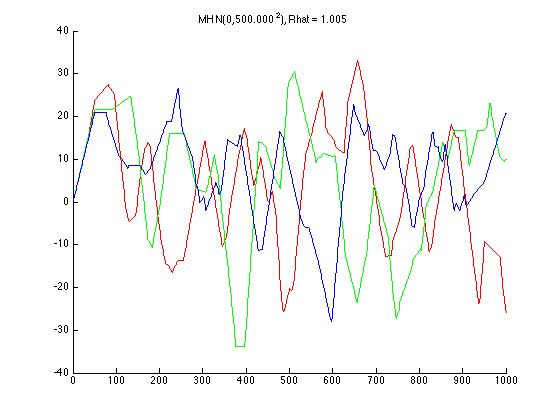

Now make 3d traceplot of samples
Cool plot from Christoph Andrieu
for i=1:length(sigmas) sigma_prop = sigmas(i); x = samples{i}; figure; nb_iter = N; x_real = linspace(-100, 100, nb_iter); y_real = exp(mixGaussLogprob(mu, Sigma, mixweight, x_real(:))); Nbins = 100; plot3(1:nb_iter, x, zeros(nb_iter, 1), 'linewidth', 2.5) hold on plot3(ones(nb_iter, 1), x_real, y_real, 'r', 'linewidth', 3) [u, v] = hist(x, linspace(-100, 100, Nbins)); plot3(zeros(Nbins, 1), v, u/nb_iter*Nbins/200, 'b', 'linewidth', 2.5) hold off; grid on; view(60, 60) xlabel('Iterations') ylabel('Samples') if sigma_prop == 0 ttl = 'gibbs sampling'; else ttl = sprintf('MH with N(0,%5.3f^2) proposal', sigma_prop); end title(ttl) printPmtkFigure(sprintf('mcmcGmmDemoSigma%d-3d', sigma_prop)); end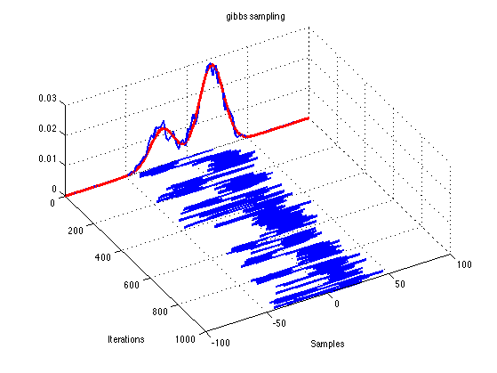 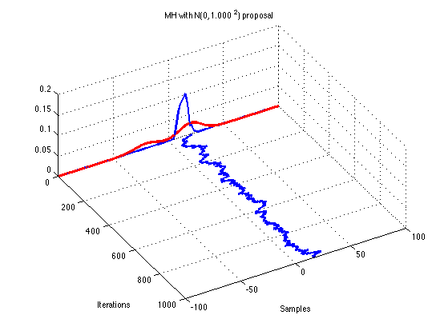 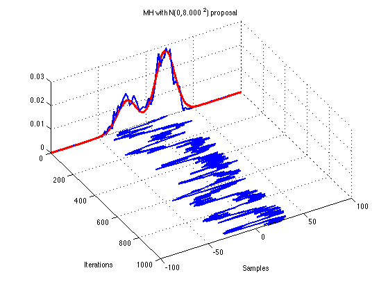 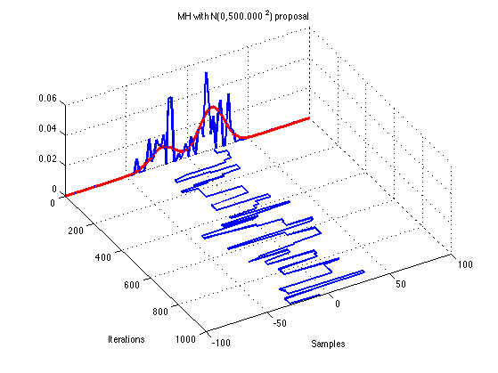
end